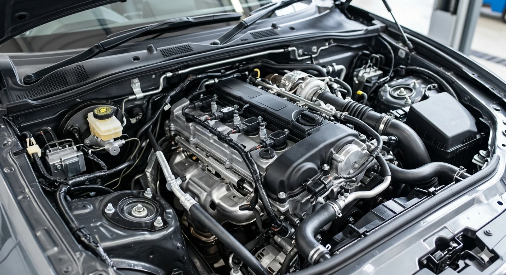
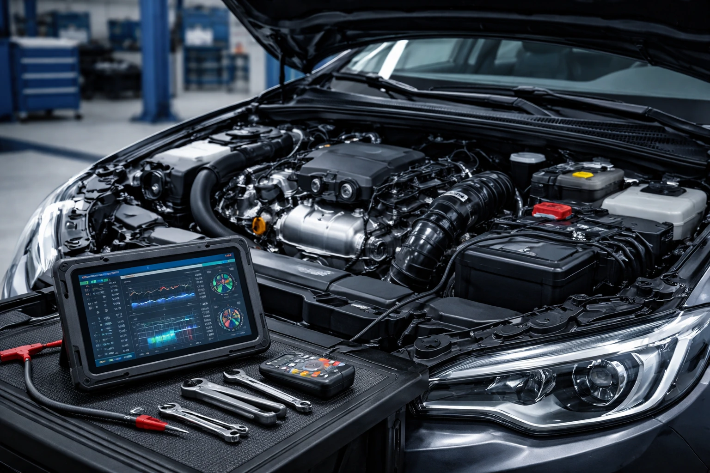
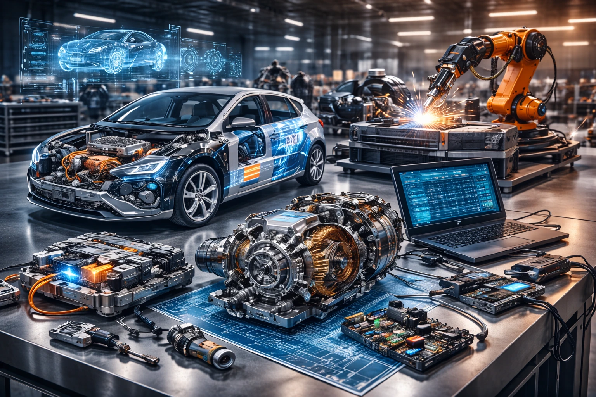
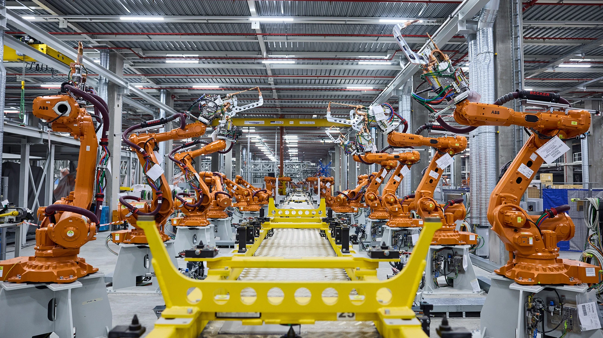

Обичаш ли автомобили и високите технологии? Тук не просто учиш за автомобила – ти се превръщаш в негов експерт.
Страницата се разработва от Бурак и Стилиян
Специалност „Автомобилна техника и мехатроника“ съчетава механика, електроника и софтуер за подготовка на специалисти, които могат да диагностицират, ремонтират и обслужват съвременни моторни превозни средства и техните компоненти.
Ще придобиеш знания и умения за:
Техническо обслужване и ремонт на автомобили и мехатронни системи.
Диагностика на механични, електронни и електромеханични системи.
Работа с бази данни, информационни системи и специализиран софтуер.
Настройка, монтаж и сервиз на двигатели и други агрегати.
Периодични прегледи и контрол на изправността на превозните средства.
Изработване и поддръжка на автомобилна техника и компоненти.
Обучението се провежда в модерни учебни работилници и лаборатории с реални автомобилни системи. Ще развиеш умения да откриваш дефекти, да заменяш части и да осигуряваш стабилна и безопасна работа на автомобила.




Специалността предлага възможности не само за работа в България, но и за международна професионална реализация.
Техник, механик и монтьор на транспортни средства
Техник по експлоатация на автомобилния транспорт
Младши автоконтрольор и инспектор по безопасност
Работа в сервиз за диагностика и ремонт на автомобили
Специалист по автоматизация и мехатронни системи
В бъдеще може да имате възможност да станете управител на собствен автосервиз или търговски обект
Ако обичаш автомобили, технологии и механика
Ако искаш да диагностицираш и ремонтираш съвременни автомобили
Ако мечтаеш за професия с практическа насоченост и добра реализация
Ако искаш да работиш с мехатронни системи и съвременни технологии
Специалност „Автомобилна техника и мехатроника“ съчетава теория и практика, за да те подготви за високотехнологичната автомобилна индустрия и професионална кариера с перспектива и възможности за развитие.